Documentation FreeBenin
FreeBenin est un site de freelance local qui met en relation les freelances et les entreprises béninoises avec des clients à la recherche de compétences spécifiques. Le site permet aux freelances de créer un profil professionnel, de proposer leurs services et de recevoir des offres de mission, tandis que les clients peuvent publier des projets et entrer en contact avec des prestataires qualifiés.
Première page du site
- Création de compte (Ordinaire ou Entreprise)
- Connexion (si vous avez déjà un compte)
- Bouton de découverte
- Documentation
Illustration :
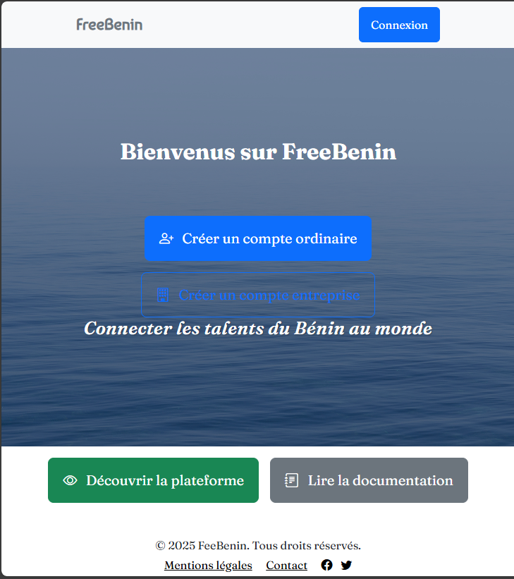Création de compte
Deux types de comptes sont disponibles :
- Compte Ordinaire (clients)
- Compte Entreprise
Compte Ordinaire

Champs requis :
- Nom
- Prénom(s)
- Nom d'utilisateur (unique)
- Numéro de téléphone
- Email (format valide requis)
- Mot de passe (confirmé)
Compte Entreprise
Plus d'informations sont demandées pour garantir la fiabilité de l'entreprise.

🚀 Commencer avec FreeBenin
Une fois votre email confirmé, vous serez redirigé vers la page de connexion :

Page d'accueil
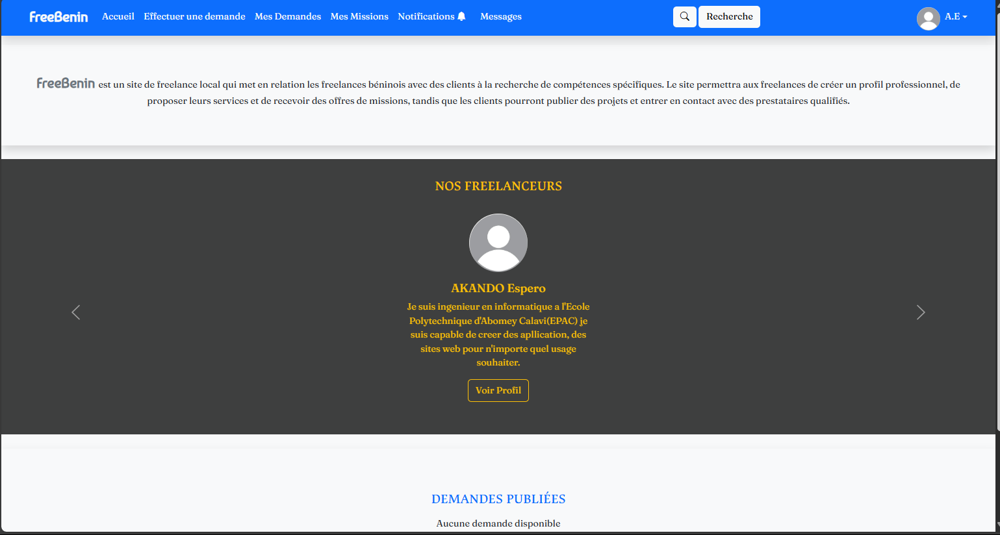Menu :
- Accueil
- Effectuer une demande
- Mes demandes
- Mes missions
- Notifications
- Messagerie
- Recherche
- Profil utilisateur
- Nos freelances
- Demandes publiées
Effectuer une demande
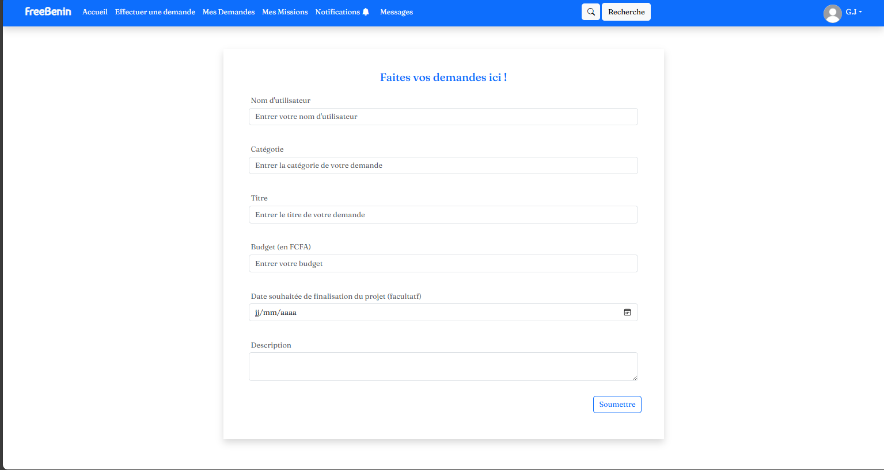Demandes publiées
Apparaissent sur la page d'accueil. Un système de modération empêche les contenus inappropriés. Un bouton Signaler permet de dénoncer ces contenus :


Mes demandes


Notifications
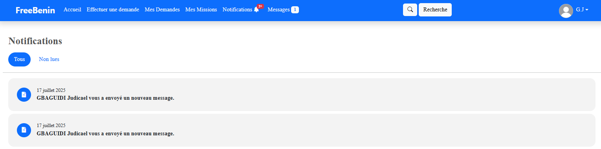Recherche
 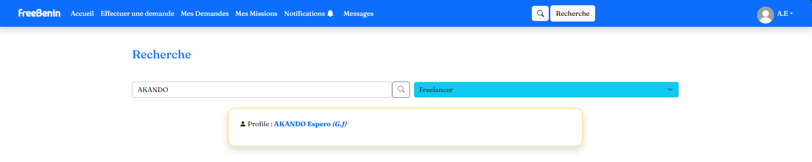
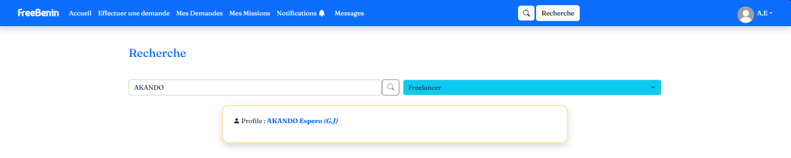
Messageries


Nos Freelances

Profil
Client :
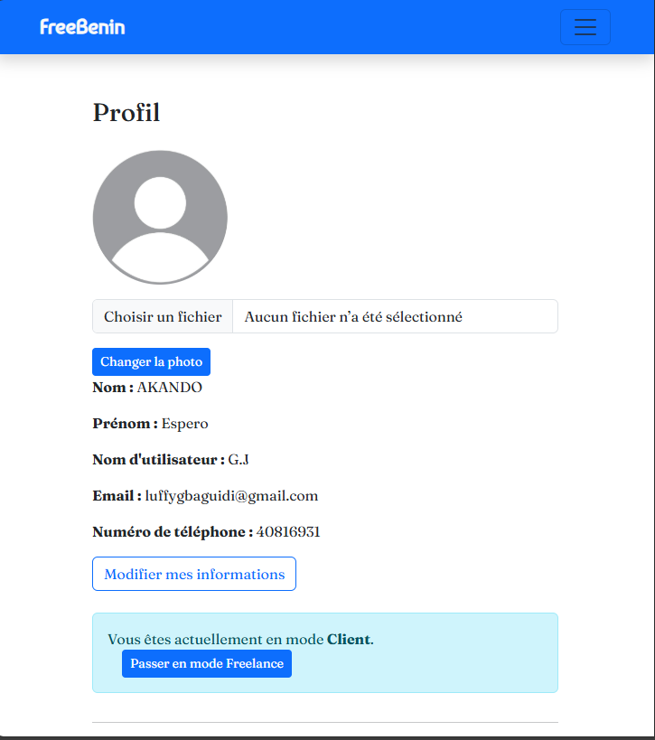Possibilité de passer en mode freelance et de modifier les informations.
Freelance :

Bouton pour compléter les informations professionnelles.
Mes missions

Réalisation d'une mission
- Attribution de la mission
- Démarrage de la mission
- Suivi de l'avancement
- Notation du freelance
Attribution
Démarrage
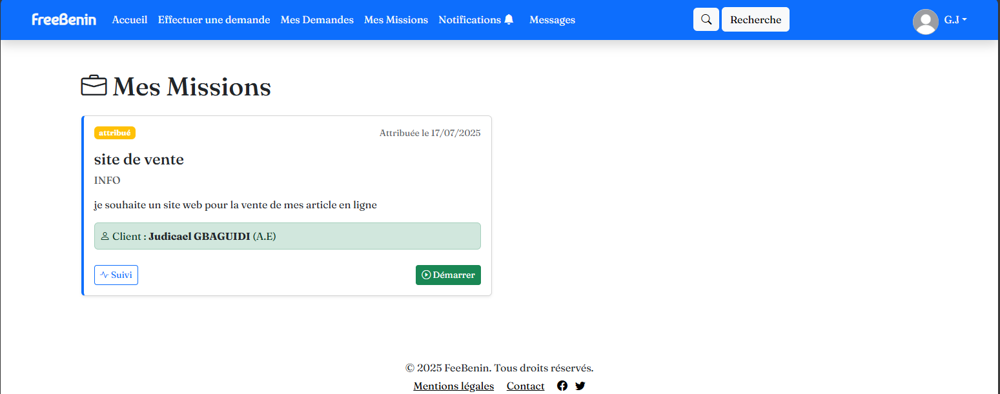 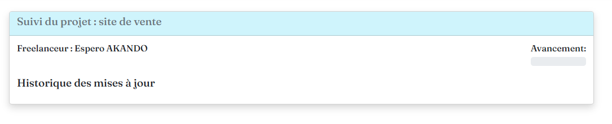
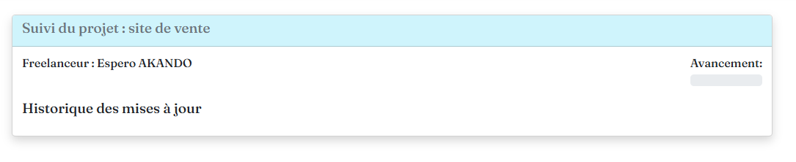
Suivi du projet


 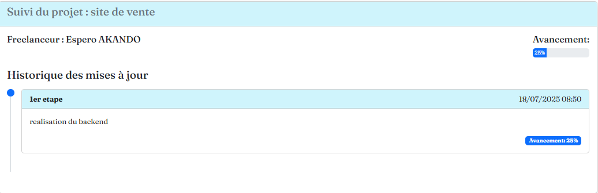
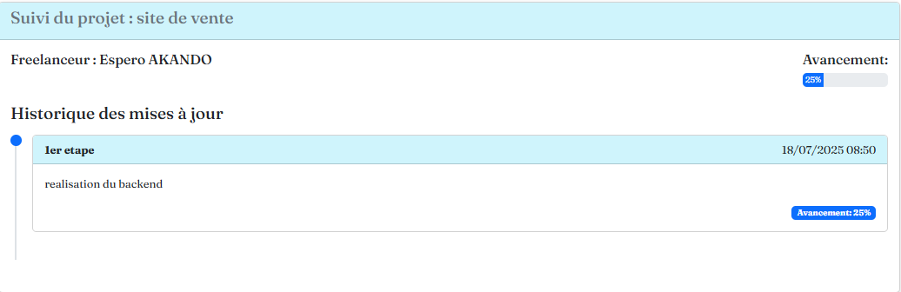

Notation


Profil freelance après notation

Signalement de profil
Le bouton Signaler le profil permet de signaler des comportements inappropriés :